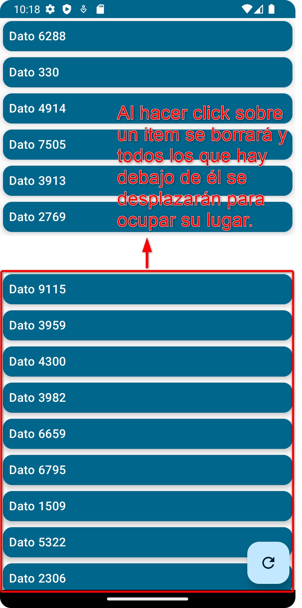
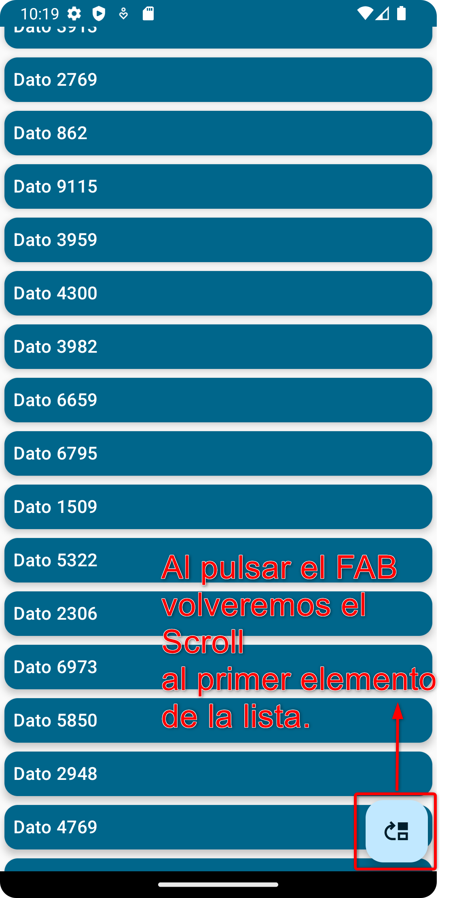
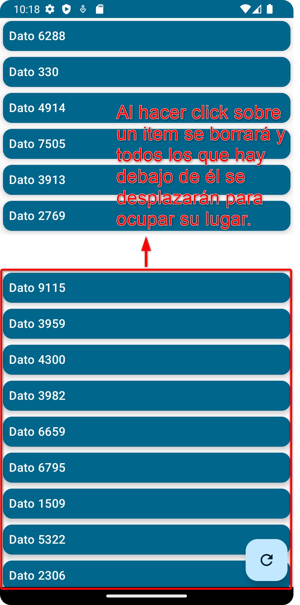
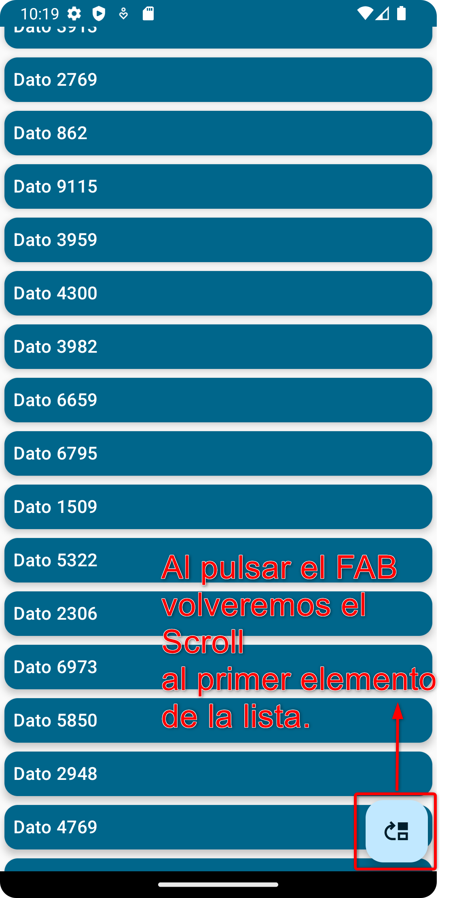

Tema 3.6 - Listas y cuadriculas de datos
Descargar estos apuntes pdf o html
Índice
Introducción
- Documentación oficial: Listas y cuadriculas diferidas
- Codelab: Crea una lista diferida de rendimiento
- Codelab: Trabajando con listas
-
Vídeo DevExperto:
-
Vídeos Stevdza-San:
-
Vídeos Philipp Lackner:
-
Vídeo Gibrán García:
En el sistema clásico de widgets XML de Android para mostrar una lista de datos se utilizaba el componente RecyclerView que se encargaba de mostrar los datos de forma eficiente. Además, este estaba asociado a un Adapter que se encargaba de gestionar los datos y de crear las vistas que se mostraban en el RecyclerView. A su vez el Adapter estaba asociado a un ViewHolder que se encargaba de gestionar los datos en cada vista.
Todo este 'boilerplate' de clases se simplifica en Jetpack Compose con los componentes LazyColumn, LazyRow, LazyVerticalGrid y LazyHorizontalGrid que se encarga de mostrar los datos de forma eficiente o 'diferida'.
Para utilizar estos componentes necesitamos un LazyListState que se encarga de gestionar el estado de la lista. Este estado se puede utilizar para saber si se ha llegado al final de la lista, para saber si se está haciendo scroll, para saber la posición de la lista, etc.
¿Por qué los layouts Lazy... son más eficientes?
Si necesitas mostrar una gran cantidad de elementos (o una lista de longitud desconocida), el uso de un diseño como Column puede causar problemas de rendimiento, ya que todos los elementos se compondrán y se dispondrán (renderizarán) independientemente de si son visibles o no.
Compose proporciona un conjunto de componentes que solo componen y disponen elementos que están visibles en el viewport del componente. Esos componentes incluyen LazyColumn y LazyRow.
Como sugiere el nombre, la diferencia entre LazyColumn y LazyRow es la orientación en la que se integran sus elementos y se desplazan. Por tanto aunque en los ejemplos se utilice LazyColumn se puede utilizar LazyRow de forma análoga.
LazyColumn
El componente LazyColumn es un componente que muestra una lista diferida de elementos de forma vertical. Está definido en la capa Fundation en el paquete fundation.lazy.
Los componentes diferidos como LazyColumn son distintos en la mayoría de los diseños de Compose. En lugar de aceptar un parámetro de bloque de contenido @Composable (lo que permite que las apps emitan directamente los objetos componibles), los componentes diferidos proporcionan un bloque LazyListScope.
LazyListScope
Este bloque LazyListScope ofrece un DSL (Lenguaje específico de dominio) que permite que las apps describan el contenido del elemento. Luego, el componente diferido es responsable de agregar el contenido de cada elemento según lo requiera el diseño y la posición de desplazamiento.
En este DSL contamos con una serie de funciones que permiten describir el contenido de un elemento. Podemos destacar las siguientes:
item: Agrega un elemento a la lista.items: Agrega una lista de elementos a la listaitemsIndexed: Agrega una lista de elementos a la lista. El índice de cada elemento se pasa al bloque de contenido.stickyHeaderystickyHeaderFor: Agregan un encabezado fijo a la lista y aunque en este tema no lo vamos a ver, es interesante saber que existe y puedes ver los vídeos de DevExperto y Philipp Lackner de Sticky Headers si quieres saber cómo se utilizan.
📌 Nota: Para poder utilizar estas funciones además de estar dentro de un
LazyColumnoLazyRowdebemos importar el paqueteimport androidx.compose.foundation.lazy.*.
Ejemplos de uso de LazyColumn
Importante
En este enlace puedes descargar todo los drawables que se utilizan en los ejemplos.
En DatosPruebaLista.kt definimos en primer lugar unos datos que mostrar en la lista. Es un data class con un identificador (no repetido) y un texto. Además, definiremos una función datosAleatorios() que generará 20 datos aleatorios.
data class Dato(val id: String, val texto: String)
// Genera un id aleatorio
fun generaId(idsGenerados: MutableSet<Int>): Int {
var id = (0..9999).random()
while (idsGenerados.contains(id))
id = (0..9999).random()
idsGenerados.add(id)
return id
}
fun datosAleatorios(): List<Dato> {
val idsGenerados = mutableSetOf<Int>()
return (0..20).map {
val id = generaId(idsGenerados)
Dato(
id = id.toString(),
texto = "Dato $id"
)
}
}
En primer lugar, en CardDatosPruebaLista.kt hemos definido el componente que emitirá cada uno de los elementos de la lista. En este caso será un TarjetaDato que recibe un Dato y un onClickDato que se ejecutará cuando se pulse sobre el elemento.
// Cada dato irá en un elevated card y solo mostrará el texto que nos indica el id
@Composable
fun TarjetaDato(
modifier: Modifier = Modifier,
datoState: Dato,
onClickDato: (Dato) -> Unit = {}
) = ElevatedCard(
modifier = modifier.then(
Modifier
.padding(4.dp).fillMaxWidth()
.clickable { onClickDato(datoState) }
),
colors = CardDefaults.elevatedCardColors(
containerColor = MaterialTheme.colorScheme.primary
),
elevation = CardDefaults.cardElevation(
defaultElevation = 4.dp
)
) {
Text(
text = datoState.texto,
style = MaterialTheme.typography.titleMedium,
modifier = Modifier.padding(8.dp),
)
}
Si descargamos el ejemplo ListaBasica.kt, podemos ver que la forma más básica de utilizar LazyColumn es con la función items() que recibe una lista de elementos y un bloque de contenido que se ejecutará por cada elemento de la lista. En este caso simplemente mostraremos el texto del elemento en un TarjetaDato.
@Composable
fun DatosEnColumnaBasico(
datosState: List<Dato>,
onClickDato: (Dato) -> Unit = {}
) {
LazyColumn {
items(datosState) { dato ->
TarjetaDato(
datoState = dato,
onClickDato = onClickDato
)
}
}
}
Veamos la definición del preview de DatosEnColumnaBasico y vamos ha hacer alguna consideraciones.
En primer lugar vamos a usar el componente de material FloatingActionButton (FAB) de material3. Es un componente que se utiliza mucho en las apps de Android y que nos permite realizar una acción principal de la app. En este caso regenerar los datos de la lista. Puedes aprender un poco más sobre su uso en Jetpack Compose en el siguiente enlace 🔗 FAB Compose.
@Preview(showBackground = true, device = "spec:width=700px,height=725px,dpi=480,orientation=portrait") @Composable private fun DatosListaBasicaPreview() { // Generamos unos datos en una lista inmutable List<Dato> y lo guardamos como estado. // ✋ Deberemos regenerar TODA LA LISTA para que se recomponga el LazyColumn var datosState by rememberSaveable { mutableStateOf(datosAleatorios()) } // Función que regenera los datos de la lista al pulsar el FAB val regeneraLista = { datosState = datosAleatorios() } // Función que borra un dato de la lista al pulsar sobre él val borraDato: (Dato) -> Unit = { d -> datosState.indexOf(d).takeIf { it >= 0 }?.let { i -> // Si encontramos el índice del dato en la lista deberemos convertirla // en mutable para poder usar el removeAt. Además, toMutableList() me creará // un nuevo objeto por lo que se producirá la recomposición. datosState = datosState.toMutableList().apply { removeAt(i) } } } ProyectoBaseTheme { Box(modifier = Modifier.fillMaxSize()) { DatosEnColumnaBasico(datosState = datosState, onClickDato = borraDato) FloatingActionButton( modifier = Modifier.align(Alignment.BottomEnd).padding(8.dp), onClick = regeneraLista ) { Icon( painter = Filled.getRefreshIcon(), contentDescription = "Recargar Datos" ) } } } }
Veamos a continuación otra forma de generar los items de la lista con la función itemsIndexed para ello definiremos el fuente ListaIndizado.kt
@Composable fun DatosEnColumnaIndizada( datosState: List<Dato>, // ✋ La función de gestión ahora puede recibir el índice en lugar del dato onClickDato: (Int) -> Unit = {} ) { LazyColumn { // Esta función además de cada dato me pasará el índice de la lista donde // se encuentra el mismo de esta manera podremos por ejemplo realizar // selecciones múltiples para borrar o pasarle a la función de selección // el índice de la lista y de esa manera ahorrarnos la búsqueda del mismo // como en el caso anterior. itemsIndexed(items = datosState) { i, dato -> // Debo pulsar fuera del card, sobre el número del índice, para que tenga // efecto el click. En caso contrario se ejecutará el click del TarjetaDato que // hemos dejado sin efecto al no establecerlo. Row( modifier = Modifier.clickable { onClickDato(i) }, verticalAlignment = Alignment.CenterVertically ) { Text( text = "$i:", style = MaterialTheme.typography.titleMedium, modifier = Modifier .padding(8.dp) .weight(0.2f) ) TarjetaDato( modifier = Modifier.weight(0.8f), datoState = dato ) } } } }
Veamos ahora como generar un preview denominado DatosListaIndizada que utilice el componente DatosEnColumnaIndizada que acabamos de definir. Para mostrar el índice junto al card de cada dato. Además, de regenerar el índice ahora al pulsar sobre el índice, se borrará el dato de la lista. RegenerÁndose de nuRvo la lista y todos sus índices.
@Preview( showBackground = true, device = "spec:width=700px,height=725px,dpi=480,orientation=portrait" ) @Composable private fun DatosListaIndizada() { var datosState by rememberSaveable { mutableStateOf(datosAleatorios()) } val regeneraLista = { datosState = datosAleatorios() } // La función de gestión ahora puede recibir el índice en lugar del dato, por lo que // me ahorro la búsqueda de la posición del dato en la lista. val borraDatoIndizado: (i: Int) -> Unit = { i -> datosState = datosState.toMutableList().apply { removeAt(i) } } ProyectoBaseTheme { Box(modifier = Modifier.fillMaxSize()) { DatosEnColumnaIndizada(datosState = datosState, onClickDato = borraDatoIndizado) FloatingActionButton( modifier = Modifier.align(Alignment.BottomEnd).padding(8.dp), onClick = regeneraLista ) { Icon( painter = Filled.getRefreshIcon(), contentDescription = "Recargar Datos" ) } } } }
LazyListState y animación simple de transiciones
Además de estado con los datos de la lista, podemos utilizar un LazyListState que se encargará de gestionar el estado de la propia lista. Este estado se puede utilizar para saber si se ha llegado al final de la lista, para saber si se está haciendo scroll, para saber la posición de la lista, etc.
Si examinamos el prototipo de la función @Composable LazyColumn veremos que tiene un parámetro state que es de este tipo y que se instancia por defecto con la función rememberLazyListState().
@Composable fun LazyColumn( modifier: Modifier = Modifier, state: LazyListState = rememberLazyListState(), ...
Podemos usar esa misma función para crear un LazyListState y pasárselo a nuestro componente LazyColumn y de esa manera llevar control de la posición de la lista.
Por ejemplo, vamos a modificar en ListaConEstado.kt ejemplos anteriores donde a nuestra función de composición de la lista le pasamos el estado de la lista ...
@OptIn(ExperimentalFoundationApi::class) @Composable fun DatosEnColumnaDisposicionAnimada( datosState: List<Dato>, onClickDato: (Dato) -> Unit, lazyListState: LazyListState = rememberLazyListState() ) { LazyColumn(state = lazyListState) { items( items = datosState, // Necesitamos que cada item genere una clave única para identificar cambios de // posición en la lista y así indicarle donde tiene que ir en // el redibujo de la misma. key = { it.id } ) { dato -> TarjetaDato( // Le pasamos este modifier a nuestra tarjeta para que si cambia su // posición, ocupe la nueva posición en la lista mediante una animación. modifier = Modifier.animateItem(), datoState = dato, onClickDato = onClickDato ) } } }
🔗 Enlaces: SObre animateItem → Enlace 1
Vamos a definir una función de preview que muestre la lista y al borrar un item los situados abajo se desplacen con una animación hasta su nueva posición. Además, al hacer scroll el icono del FAB cambiará su aspecto y comportamiento de tal manera que al pulsar en el lo que hará es volver al principio de la lista, como se muestre en la captura más a la derecha.
 



@Preview(
showBackground = true,
device = "spec:width=700px,height=725px,dpi=480,orientation=portrait"
)
@Composable
private fun DatosListaDisposicionAnimadaYEstado() {
var datosState by rememberSaveable { mutableStateOf(datosAleatorios()) }
val borraDato: (Dato) -> Unit = { d ->
datosState.indexOf(d).takeIf { it >= 0 }?.let { i ->
datosState = datosState.toMutableList().apply { removeAt(i) }
}
}
val regeneraLista = { datosState = datosAleatorios() }
// Definimos un objeto estado de la lista que pasaremos al composable que la muestra
var lazyListState = rememberLazyListState()
// Definimos un estado derivado de la lista que me indique si el
// primer elemento de la misma está visible o no.
val primeroVisible by remember {
derivedStateOf { lazyListState.firstVisibleItemIndex == 0 }
}
// Este código se entenderá más adelante en el curso. Pero básicamente
// define un handler que mueve la lista hasta su posición inicial usando concurrencia.
// Debe ser así porque este tipo de comportamientos dinámicos no se puede definir
// utilizando estados de composición.
val cs = rememberCoroutineScope()
val volverAlPrincipio = {
cs.launch { lazyListState.animateScrollToItem(0) }
Unit
}
ProyectoBaseTheme {
Box(modifier = Modifier.fillMaxSize()) {
DatosEnColumnaDisposicionAnimada(
datosState = datosState, onClickDato = borraDato,
lazyListState = lazyListState // hoisting del estado de la lista
)
FloatingActionButton(
modifier = Modifier.align(Alignment.BottomEnd).padding(8.dp),
onClick = if (primeroVisible) regeneraLista else volverAlPrincipio
) {
Icon(
painter = if (primeroVisible) Filled.getRefreshIcon()
else Filled.getArrowBackIosIcon(),
contentDescription = "Datos"
)
}
}
}
}
Recomponiendo el estado de un item de forma aislada
Si volvemos sobre la documentación oficial del Estado de Compose podemos encontrar la siguiente advertencia al final del apartado:
Precaución
Utilizar objetos mutables como ArrayList<T> o mutableListOf() como estado en Compose puede hacer que los usuarios vean datos incorrectos o caducados en tu app. Los objetos mutables que no son observables, como ArrayList o una clase de datos mutable, no son observables por Compose y no provocan una recomposición cuando cambian. En lugar de utilizar objetos mutables no observables, la recomendación es utilizar un contenedor de datos observable como State<List<T>> y el inmutable listOf().
Esto ya lo hemos comentado al principio del tema cuando definíamos...
var datosState by rememberSaveable { mutableStateOf(datosAleatorios()) }
donde datosState es, en el fondo, un State<List<Dato>> que es un objeto observable inmutable y al borrar un dato de la lista teníamos que hacer que asignar de nuevo datosSate
val borraDato: (Dato) -> Unit = { d -> datosState.indexOf(d).takeIf { it >= 0 }?.let { i -> datosState = datosState.toMutableList().apply { removeAt(i) } } }
Porque si hacíamos que datosState fuera un State<MutableList<Dato>> con ...
var datosState by rememberSaveable { mutableStateOf(datosAleatorios().toMutableList()) }
y luego quisiéramos modificar solo un objeto Dato de la lista con...
// No se produciría una recomposición del dato modificado i porque solo son observables cambios
// completos en la lista y no en cada uno de los objetos que contiene.
datosState[i] = datosState[i].copy(texto = "Modificado ${d.id}")
En el caso concreto del LazyColumn estos cambios en objetos de la lista sin modificar la referencia a la misma. No se verán reflejados en los items actuales del viewport, sino solo si se tiene que redibujar al aparecer de nuevo en el viewport de la lista por el efecto del scroll.
MutableStateList
En los casos en que queramos que cada uno de los objetos de la lista sea observable y se produzca una recomposición de los items de la lista cuando se modifique un objeto de la lista, podemos utilizar la función mutableStateListOf() que nos devolverá un SnapshotStateList<T> que es una lista mutable de objetos observables.
En el siguiente @Preview, que definiremos en ListaDeSnapShot.kt, vamos a volver a usar DatosEnColumnaDisposicionAnimada pero esta vez sin pasarle un estado de la lista.
@Preview(showBackground = true, device = "spec:width=700px,height=725px,dpi=480,orientation=portrait") @Composable private fun DatosListaSnapShot() { // Usamos toMutableStateList() para poder modificar la lista y además // observar cambios en los objetos. No hace falta usar by var datosState = remember { datosAleatorios().toMutableStateList() } // Al hacer clic sobre el card tendremos 2 efectos: val modificaDato: (Dato) -> Unit = { d -> datosState.indexOf(d).takeIf { it >= 0 }?.let { i -> // Detecto si estamos en el primer o segundo click viendo si el texto // del card empieza por "Modificado " // Fíjate que ninguno de los casos de la lógica reasignamos datosState como // antes. Sino que modificamos el objeto que está en el índice devuelto. if (datosState[i] .texto.subSequence(0, datosState[i].texto.indexOf(" ")) != "Modificado" ) // El primer click modificará el texto del card por "Modificado id" datosState[i] = datosState[i].copy(texto = "Modificado ${d.id}") else // El segundo click eliminará el card de la lista datosState.removeAt(i) } } ProyectoBaseTheme { Box(modifier = Modifier.fillMaxSize()) { DatosEnColumnaDisposicionAnimada( datosState = datosState, onClickDato = modificaDato) } } }
LazyVerticalGrid
- Documentación oficial: Cuadrídulas Diferidas
Los elementos que admiten composición LazyVerticalGrid y LazyHorizontalGrid admiten la visualización de elementos en una cuadrícula. Una cuadrícula vertical diferida mostrará sus elementos en un contenedor desplazable de forma vertical, que abarcará varias columnas, mientras que las cuadrículas horizontales diferidas tendrán el mismo comportamiento en el eje horizontal.
Las cuadrículas tienen las mismas capacidades de API potentes que las listas y también usan un DSL muy similar (LazyGridScope) para describir el contenido. Por lo que muchas de las cosas aplicables a LazyColumn también lo son a LazyVerticalGrid.
Ejemplo de uso de LazyVerticalGrid
Aunque tratemos LazyVerticalGrid. Todo lo que se diga de este componente es aplicable a LazyHorizontalGrid.
Para este ejemplo vamos a cambiar un poco la clase que hemos utilizado para mostrar los datos en la lista.
Vamos a crear el fuente DatosPruebaGrid.kt donde definiremos una clase llamada DatoGrid y cada dato además tendrá un color y un icono asociado.
data class DatoGrid(
val id: String,
val texto: String,
val color: Color,
val idIcono: Int
) {
companion object {
private val idsGenerados = mutableSetOf<Int>()
// Vamos a definir dos listas de iconos y colores para intentar
//que los datos que se muestren en la cuadrícula sean diferentes.
private val iconos = listOf(
R.drawable.favorite_24px, R.drawable.ac_unit_24px,
R.drawable.schedule_24px, R.drawable.blender_24px,
R.drawable.cake_24px, R.drawable.cottage_24px
)
private val colores = listOf(
Color(0xFFA20001), Color(0xFF9C27B0),
Color(0xFF673AB7), Color(0xFF3F51B5),
Color(0xFF605D7B), Color(0xFF005618)
)
private fun generaId(): Int {
var id = (0..9999).random()
while (idsGenerados.contains(id))
id = (0..9999).random()
idsGenerados.add(id)
return id
}
fun datosGridAleatorios()
: List<DatoGrid> {
return (0..20).map {
val id = generaId()
DatoGrid(
id = id.toString(),
texto = "Dato\n$id",
color = colores.random(),
idIcono = iconos.random()
)
}
}
fun borraDatoGrid(dato: DatoGrid, datos: List<DatoGrid>): List<DatoGrid> {
val i = datos.indexOf(dato)
return if (i >= 0) datos.toMutableList().apply { removeAt(i) } else datos
}
fun addDatoGridAleatorio(datos: List<DatoGrid>): List<DatoGrid> {
return mutableListOf<DatoGrid>().apply {
add(
DatoGrid(
id = generaId().toString(),
texto = "Dato\n${generaId()}",
color = colores.random(),
idIcono = iconos.random()
)
)
datos.forEach { add(it) }
}
}
}
}
Como se puede ver en el código, esta vez vamos a insertar datos aleatorios al principio de la lista de datos por hacer algo diferente y ver somo se comporta la animación de la cuadrícula. Es por ello que hemos definido la lista idsGenerados como una variable global, para no repetir ids, después de haber generado los datos de la lista.
Además definiremos el fichero GridAnimado.kt donde definimos primero el componente que emitirá cada uno de los 'items' de la cuadrícula será un TarjetaDatoGrid y dispondrá en columna el icono y el texto del dato.
@Composable
fun TarjetaDatoGrid(
modifier: Modifier = Modifier,
datoState: DatoGrid, onClickDato: (DatoGrid) -> Unit = {}
) = ElevatedCard(
modifier = modifier.then(
Modifier.padding(2.dp).fillMaxWidth()
.clickable { onClickDato(datoState) }
),
colors = CardDefaults.elevatedCardColors(containerColor = Color.Transparent),
elevation = CardDefaults.cardElevation(defaultElevation = 1.dp)
) {
Column(
modifier = Modifier.fillMaxWidth(),
horizontalAlignment = Alignment.CenterHorizontally)
{
Icon(
painter = painterResource(id = datoState.idIcono), contentDescription = "Icono",
tint = datoState.color, modifier = Modifier.padding(6.dp)
)
Text(
text = datoState.texto, color = datoState.color,
textAlign = TextAlign.Center,
style = MaterialTheme.typography.labelSmall, modifier = Modifier.padding(6.dp),
)
}
}
Vamos a definir el componente DatosEnGridDisposicionAnimada que recibe una lista de datos y un onClickDato que se ejecutará cuando se pulse sobre el elemento.
Además de la lista de datos, recibe un parámetro columns de tipo GridCells que nos permite definir el número de columnas que tendrá la cuadrícula y podrá tener los siguientes valores:
- ⭐
GridCells.Adaptive: Define una cuadrícula con tantas filas o columnas como sea posible con la condición de que cada celda tenga al menos el espaciominSizey todo el espacio extra se distribuya uniformemente. GridCells.Fixed: Define una cuadrícula con un número fijo de filas o columnas.GridCells.FixedSize: Define una cuadrícula con tantas filas o columnas como sea posible con la condición de que cada celda tenga exactamente el tamaño size.
@OptIn(ExperimentalFoundationApi::class) @Composable fun DatosEnGridDisposicionAnimada( columns: GridCells, // Lo hemos definido como parámetro para poder hacer pruebas datosState: List<DatoGrid>, onClickDato: (DatoGrid) -> Unit ) { LazyVerticalGrid( columns = columns, state = rememberLazyGridState() ) { items( // La función items esta vez recibe el número de elementos de la lista count = datosState.size, // Permite saber que items permanecen en la lista y cuales no // para poder animar los que se permanezcan tras un cambio. key = { index -> datosState[index].id } ) { index -> TarjetaDatoGrid( // Animaremos el desplazamiento de los items de la cuadrícula // ante un cambio de posición modifier = Modifier.animateItem(), // Accederemos al índice recibido en el manejador. datoState = datosState[index], onClickDato = onClickDato ) } } }
Vamos a definir una función de @Preview para visualizar nuestra cuadrícula pero antes vamos a definir un par de funciones de utilidad para añadir y borrar datos de la lista.
private fun borraDatoGrid(dato: DatoGrid, datos: List<DatoGrid>): List<DatoGrid> {
val i = datos.indexOf(dato)
return if (i >= 0) datos.toMutableList().apply { removeAt(i) } else datos
}
private fun addDatoGridAleatorio(datos: List<DatoGrid>): List<DatoGrid> {
return mutableListOf<DatoGrid>().apply {
// Añadimos un dato aleatorio al principio de la lista
add(DatoGrid(
id = generaId().toString(),
texto = "Dato\n${generaId()}",
color = colores.random(),
icono = iconos.random()
))
// Añadimos el resto de datos a continuación
datos.forEach { add(it) }
}
}
En esta ocasión el FAB añadirá el dato de forma aleatoria al principio de la lista. En las siguientes imágenes puedes ver el resultado de la visualización aplicando los valores a columns de GridCells.Fixed(2) para tener 2 columnas fijas y GridCells.Adaptive(50.dp) para que intente meter el máximo número de columnas posibles con un tamaño mínimo de 50dp y el espacio sobrante lo distribuya entre los items de la fila.
@Preview(
showBackground = true,
device = "spec:width=700px,height=755px,dpi=480,orientation=portrait"
)
@Composable
private fun DatosGridDisposicionAnimadaPreview() {
// Definimos un State<List<DataGrid>> para el estado
var datosGridState by rememberSaveable {
mutableStateOf(DatoGrid.datosGridAleatorios())
}
// Definimos los manejadores de eventos que llamarán a las funciones de utilidad
// que hemos definido para añadir y borrar datos de la lista.
// Además, deberán modificar toda el objeto lista para que se produzca la recomposición.
val borraDato: (DatoGrid) -> Unit = {
d -> datosGridState = DatoGrid.borraDatoGrid(d, datosGridState)
}
val addDato: () -> Unit = {
datosGridState = DatoGrid.addDatoGridAleatorio(datosGridState)
}
ProyectoBaseTheme {
Box(modifier = Modifier.fillMaxSize()) {
DatosEnGridDisposicionAnimada(
// columns = GridCells.Fixed(2),
columns = GridCells.Adaptive(50.dp),
datosState = datosGridState,
onClickDato = borraDato
)
FloatingActionButton(
modifier = Modifier.align(Alignment.BottomEnd).padding(8.dp),
onClick = addDato
) {
Icon(
imageVector = Icons.Default.Add,
contentDescription = "Datos"
)
}
}
}
}